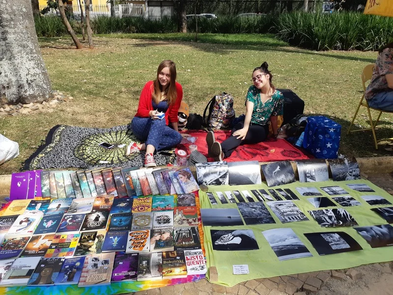

Exposição fotográfica · 2018
Feira Beco do Inferno

Ver no portfólio originalO projeto
Fotografias em preto e branco sobre o cotidiano, seus detalhes, silêncios e pequenos gestos. A mostra também deu origem a pôsteres, marcadores e cartões postais.
Minha participação
Realizei minha primeira exposição fotográfica em parceria com Iara Marinho.
Exposição em parceria com Iara Marinho, em Sorocaba.
Agosto de 2018